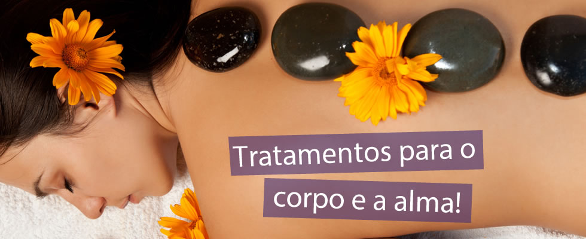
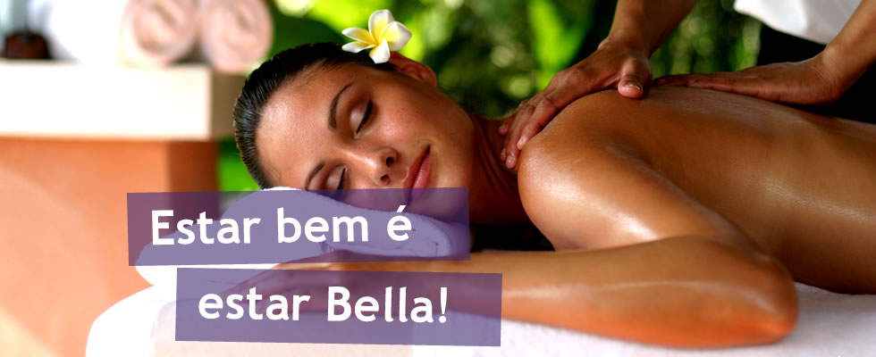

A drenagem linfática é uma técnica de massagem que trabalha o sistema linfático, estimulando-o a trabalhar de forma rápida, movimentando a linfa até os gânglios linfáticos. Essa técnica foi desenvolvida em 1932 pelo terapeuta dinamarquês Vodder e sua esposa e, posteriormente, foi aprimorada, tornando-se popular. A linfa é o líquido existente nos vasos dos gânglios linfáticos. É caracterizada por sua viscosidade, ausência de cor, por conter substâncias orgânicas e inorgânicas, resíduos e toxinas. A linfa é o líquido existente nos vasos dos gânglios linfáticos. É caracterizada por sua viscosidade, ausência de cor, por conter substâncias orgânicas e inorgânicas, resíduos e toxinas.
A fisioterapia é uma reabilitação que ajuda a fortalecer ossos e os músculos para que as pessoas possam voltar a andar ou recuperar movimentos que por algum acidente, ou doença tenham perdido, a fisioterapia também é indicado para pessoas de idades para que elas possam ter uma boa qualidade de vida, e também não percam movimentos que com a idade é normal perder.
Também ajuda na reabilitação de fraturas de atletas para que eles possam fortalecer os seus músculos e voltar as atividades em pouco tempo, porém a mesma tem um auto custo e algumas pessoas podem não ter condições de pagar, por isso que alguns postos de saúde oferecem o tratamento gratuitamente.
As massagens, além de nos beneficiarem em termos estéticos e relaxantes, podem servir como aliadas em tratamentos relacionados à saúde. A massoterapia é uma técnica que consiste em um conjunto de toques exercidos com as mãos ou outras partes do corpo e aparelhos sobre determinadas regiões. Indicada para aliviar dores, diminuir o estresse e a tensão, controlar as dores musculares, eliminar traumas e estimular a circulação sanguínea, as massagens precisam ser feitas por especialistas e, antes de iniciar um tratamento, o profissional deve indicar a melhor técnica para o caso. Essa é uma das grandes diferenças entre a massoterapia e a massagem comum. .
A CASA DO CORPO trás um olhar diferente para a saúde acolhento os clientes e espelhando o que há de mas profundo: o corpo que funciona em todas sua potência e harmonia. Aqui voçe estímula e conhece seu corpo atrsvés da sensação,respiração, percepção interiorização e descobre movimentos e partes do seu corpo que antes estavam adormecidos! NOSSA INTENÇÃO É IMPRIMIR UMA NOVA FORMA DE SENTIR O CORPO,REPROGRAMAR E REDESCOBRIR OS MOVIMENTOS DO CORPO COM PRAZER E ALEGRIA DE SER.Volte para casa.Oseu corpo é sua Casas!
Preservar a saúde e a qualidade de vida das pessoas, a partir de um atendimento profissional, ético, humano e personalizado
Gerar valor para nossos clientes, acionistas, equipes e a sociedade, atuando de forma sustentável.
Os valores guiam a conduta de uma organização, quando planos de Missão e Visão estiverem em execução. São inegociáveis, ditando comportamentos e atitudes no funcionamento de toda estrutura organizacional e dão suporte às formas de relacionamento dos colaboradores entre si e perante os clientes, fornecedores e sociedade.
"Fisíoterapeuta,graduada na Univercidade Severino Sombras de Vassouras,RJ,2004. Aperfeiçoamentos:Métodos Pilates,Drenagem Linfática,RPG: -Redução Portural Global Philipe Souchard, Cadeias Musculares e Articulares - GDS(em andamento)."
"Fisíoterapeuta ,graduada na Univercidade Regional de Blumenau,2003. Especializada pela Univercidade Evangélica do Paraná - 2005.Aperfeiçoamentos: Método Pilates:Thereza Camarão - 2007; Formada em RPG - Reeducação Postural Global Philipe Souchard - 2007,Curso de Reeducação do Movimento - Método Ivaldo Bertazzo-2010 e formação em Cadeias Musculares e Articulares - Método GDS - 2013."